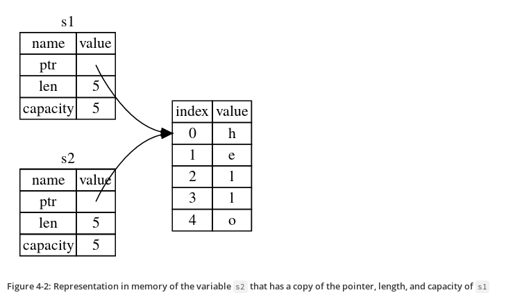

Introduction
The source code of this site is here. Contributions and bug fixes welcome!
Chapter 1 - Getting started
Chapter 2 - Programming a Guessing game
#![allow(unused)] fn main() { let mut guess = String::new(); }
let statement is used to create a variable.
#![allow(unused)] fn main() { let foo = 5; // immutable let mut bar = 5; // mutable }
The :: syntax in the ::new line indicates that new is an
associated function of the String type. An associated function is
implemented on a type, in this case String, rather than on a
particular instance of a String. Some languages call this a static
method.
This new function creates a new, empty string. You’ll find a new
function on many types, because it’s a common name for a function that
makes a new value of some kind.
Crate link: https://doc.rust-lang.org/stable/std/string/struct.String.html#method.new
use std::io; use std::cmp::Ordering; use rand::Rng; fn main() { println!("Guess the number!"); let secret_number = rand::thread_rng().gen_range(1, 101); loop { println!("Please input your guess."); let mut guess = String::new(); io::stdin().read_line(&mut guess) .expect("Failed to read line"); let guess: u32 = match guess.trim().parse() { Ok(num) => num, Err(_) => continue, }; println!("You guessed: {}", guess); match guess.cmp(&secret_number) { Ordering::Less => println!("Too small!"), Ordering::Greater => println!("Too big!"), Ordering::Equal => { println!("You win!"); break; } } } }
Chapter 3 - Common Programming Concepts
Constants
- Constants are values that are bound to a name and not allowed to change.
- You declare constants using the
constkeyword instead of theletkeyword, and the type of the value must be annotated. - In Rust, constants can be set only to a constant expression, not the result of a function call or any other value that could only be computed at runtime.
Example:
#![allow(unused)] fn main() { const MAX_POINTS: u32 = 100_000; }
Shadowing
fn main() { let x = 5; let x = x + 1; // shadow the first x let x = x * 2; // shadow the second x println!("The value of x is: {}", x); }
Difference between mut and shadowing is that because we’re
effectively creating a new variable when we use the let keyword again,
we can change the type of the value but reuse the same name.
Data types
Rust has two kinds of data types:
Scalar types
A scalar type represents a single value. Rust has four primary scalar types: integers, floating-point numbers, Booleans, and characters.
- Signed integer: i8, i16, i32, i64, i128, isize
- Unsigned integer: u8, u16, u32, u64, u128, usize
- Floating point: f32, f64
- Boolean: bool
- Character: char
Rust’s char type is four bytes in size and represents a Unicode Scalar Value.
Compound types
Compound types can group multiple values into one type. Rust has two primitive compound types: tuples and arrays.
let tuple: (i32, f64, u8) = (500, 6.4, 1);
Unlike a tuple, every element of an array must have the same type. Arrays in Rust are different from arrays in some other languages because arrays in Rust have a fixed length, like tuples.
let a: [i32; 5] = [1, 2, 3, 4, 5];
Another way of writing arrays:
#![allow(unused)] fn main() { let a = [3; 5]; let b = [3, 3, 3, 3, 3]; // equivalent as a array let first = a[0]; // Access element }
Note that all the types discussed above are stored in stack.
Functions
Some examples:
fn main() { another_function(5, 6); } fn another_function(x: i32, y: i32) { println!("The value of x is: {}", x); println!("The value of y is: {}", y); } fn plus_one(x: i32) -> i32 { x + 1 }
Control Flow
If Expressions
fn main() { let number = 3; if number < 5 { println!("condition was true"); } else { println!("condition was false"); } }
loop construct
#![allow(unused)] fn main() { loop { println!("again!"); } }
while loop
#![allow(unused)] fn main() { while number != 0 { println!("{}!", number); number = number - 1; } }
for loop
fn main() { let a = [10, 20, 30, 40, 50]; for element in a.iter() { println!("the value is: {}", element); } }
Chapter 4 - Understanding Ownership
Heap vs Stack
- When your code calls a function, the values passed into the function (including, potentially, pointers to data on the heap) and the function’s local variables get pushed onto the stack. When the function is over, those values get popped off the stack.
- Accessing data in the heap is slower than accessing data on the stack because you have to follow a pointer to get there.
Ownership rules
- Each value in Rust has a variable that’s called its owner.
- There can only be one owner at a time.
- When the owner goes out of scope, the value will be dropped.
The String type
- This type is stored on heap.
- Can be mutated.
#![allow(unused)] fn main() { { let s1 = String::from("hello"); // s1 is valid from this point forward // do stuff with s1 } // this scope is now over, and s1 is no // longer valid }
When a variable goes out of scope, Rust calls a special function for
us. This function is called drop, and it’s where the author of
String can put the code to return the memory. Rust calls drop
automatically at the closing curly bracket.
Representation of s1 in memory

Ways Variable and Data interact
#![allow(unused)] fn main() { let x = 5; let y = x; }
- In the above code, we bind the value 5 to x; then make a copy of the value in x and bind it to y.
- This happens because integers are simple values with a known, fixed size, and these two 5 values are pushed onto the stack.
Now let's look at the String version:
#![allow(unused)] fn main() { let s1 = String::from("hello"); let s2 = s1; }
This looks very similar to the previous code, so we might assume that the way it works would be the same: that is, the second line would make a copy of the value in s1 and bind it to s2. But this isn’t quite what happens.
What happens after s2 = s1

But s1 gets invalidated

Ownership and functions
The semantics for passing a value to a function are similar to those for assigning a value to a variable. Passing a variable to a function will move or copy, just as assignment does.
fn main() { let s = String::from("hello"); // s comes into scope takes_ownership(s); // s's value moves into the function... // ... and so is no longer valid here let x = 5; // x comes into scope makes_copy(x); // x would move into the function, // but i32 is Copy, so it’s okay to still // use x afterward } // Here, x goes out of scope, then s. But because s's value was moved, nothing // special happens. fn takes_ownership(some_string: String) { // some_string comes into scope println!("{}", some_string); } // Here, some_string goes out of scope and `drop` is called. The backing // memory is freed. fn makes_copy(some_integer: i32) { // some_integer comes into scope println!("{}", some_integer); } // Here, some_integer goes out of scope. Nothing special happens.
References and Borrowing
Example code of References:
fn main() { let s1 = String::from("hello"); let len = calculate_length(&s1); println!("The length of '{}' is {}.", s1, len); } fn calculate_length(s: &String) -> usize { s.len() }
These ampersands are references, and they allow you to refer to some value without taking ownership of it.
We call having references as function parameters borrowing.
Just as variables are immutable by default, so are references. We’re not allowed to modify something we have a immutable reference to.
Mutuable references
Example code of mutable reference:
fn main() { let mut s = String::from("hello"); change(&mut s); } fn change(some_string: &mut String) { some_string.push_str(", world"); }
But mutable references have one big restriction: you can have only one mutable reference to a particular piece of data in a particular scope. This code will fail:
#![allow(unused)] fn main() { let mut s = String::from("hello"); let r1 = &mut s; let r2 = &mut s; }
The benefit of having this restriction is that Rust can prevent data races at compile time. A similar rule exists for combining mutable and immutable references:
#![allow(unused)] fn main() { let mut s = String::from("hello"); let r1 = &s; // no problem let r2 = &s; // no problem let r3 = &mut s; // BIG PROBLEM }
The Slice type
Another data type that does not have ownership (the other one is references) is the slice.
String Slices
#![allow(unused)] fn main() { let s = String::from("hello world"); let hello = &s[0..5]; let world = &s[6..11]; }
We can create slices using a range within brackets by specifying [starting_index..ending_index], where starting_index is the first position in the slice and ending_index is one more than the last position in the slice.
Other examples:
#![allow(unused)] fn main() { let s = String::from("hello"); let slice = &s[0..2]; let slice = &s[..2]; }
#![allow(unused)] fn main() { let s = String::from("hello"); let len = s.len(); let slice = &s[3..len]; let slice = &s[3..]; }
#![allow(unused)] fn main() { let s = String::from("hello"); let len = s.len(); let slice = &s[0..len]; let slice = &s[..]; }
The type that signifies “string slice” is written as &str:
#![allow(unused)] fn main() { fn first_word(s: &String) -> &str { let bytes = s.as_bytes(); for (i, &item) in bytes.iter().enumerate() { if item == b' ' { return &s[0..i]; } } &s[..] } }
Other Slices
#![allow(unused)] fn main() { let a = [1, 2, 3, 4, 5]; let slice = &a[1..3]; }
This slice has the type &[i32].
Bonus: Explanation of String and it's variation from burntsushi
Chapter 5 - Using Structs
To define a struct, we enter the keyword struct and name the entire struct.
#![allow(unused)] fn main() { struct User { username: String, email: String, sign_in_count: u64, active: bool, } }
Immutable instance of the Struct:
#![allow(unused)] fn main() { let user1 = User { email: String::from("someone@example.com"), username: String::from("someusername123"), active: true, sign_in_count: 1, }; }
Mutuable instance of the Struct:
#![allow(unused)] fn main() { let mut user1 = User { email: String::from("someone@example.com"), username: String::from("someusername123"), active: true, sign_in_count: 1, }; user1.email = String::from("anotheremail@example.com"); }
Some syntax sugars
Field init shorthand:
#![allow(unused)] fn main() { fn build_user(email: String, username: String) -> User { User { email, username, active: true, sign_in_count: 1, } } }
Stuct update syntax:
#![allow(unused)] fn main() { let user2 = User { email: String::from("another@example.com"), username: String::from("anotherusername567"), ..user1 }; }
Tuple Structs
You can also define structs that look similar to tuples, called tuple structs. Tuple structs have the added meaning the struct name provides but don’t have names associated with their fields; rather, they just have the types of the fields.
#![allow(unused)] fn main() { struct Color(i32, i32, i32); struct Point(i32, i32, i32); let black = Color(0, 0, 0); let origin = Point(0, 0, 0); }
Method Syntax
Methods are different from functions in that they’re defined within the context of a struct (or an enum or a trait object), and their first parameter is always self, which represents the instance of the struct the method is being called on.
Example code:
#[derive(Debug)] struct Rectangle { width: u32, height: u32, } impl Rectangle { fn area(&self) -> u32 { self.width * self.height } } fn main() { let rect1 = Rectangle { width: 30, height: 50 }; println!( "The area of the rectangle is {} square pixels.", rect1.area() ); }
In the signature for area, we use &self instead of rectangle: &Rectangle because Rust knows the type of self is Rectangle due to this method’s being inside the impl Rectangle context. Note that we still need to use the & before self, just as we did in &Rectangle. Methods can take ownership of self, borrow self immutably as we’ve done here, or borrow self mutably, just as they can any other parameter.
Associated functions
Another useful feature of impl blocks is that we’re allowed to define functions within impl blocks that don’t take self as a parameter. These are called associated functions because they’re associated with the struct.
Associated functions are often used for constructors that will return a new instance of the struct:
#![allow(unused)] fn main() { impl Rectangle { fn square(size: u32) -> Rectangle { Rectangle { width: size, height: size } } } }
To call this associated function, we use the :: syntax with the struct
name; let sq = Rectangle::square(3); is an example.
Chapter 6 - Enums and Pattern matching
Example code:
#![allow(unused)] fn main() { enum Message { Quit, Move { x: i32, y: i32 }, Write(String), ChangeColor(i32, i32, i32), } impl Message { fn call(&self) { // method body would be defined here } } let m = Message::Write(String::from("hello")); m.call(); }
Option type
#![allow(unused)] fn main() { enum Option<T> { Some(T), None, } }
match Control Flow Operator
#![allow(unused)] fn main() { #[derive(Debug)] // so we can inspect the state in a minute enum UsState { Alabama, Alaska, // --snip-- } enum Coin { Penny, Nickel, Dime, Quarter(UsState), } fn value_in_cents(coin: Coin) -> u8 { match coin { Coin::Penny => 1, Coin::Nickel => 5, Coin::Dime => 10, Coin::Quarter(state) => { println!("State quarter from {:?}!", state); 25 }, } } }
Matching with Option
#![allow(unused)] fn main() { fn plus_one(x: Option<i32>) -> Option<i32> { match x { None => None, Some(i) => Some(i + 1), } } }
if let
This code:
#![allow(unused)] fn main() { let some_u8_value = Some(0u8); match some_u8_value { Some(3) => println!("three"), _ => (), } }
can be written as:
#![allow(unused)] fn main() { if let Some(3) = some_u8_value { println!("three"); } }
The else part is optional and you can include that too.
Chapter 7 - Managing Growing Projects with Packages, Crates, and Modules
A package can contain multiple binary crates and optionally one library crate. For very large projects of a set of interrelated packages that evolve together, Cargo provides workspaces.
Rust has a number of features that allow you to manage your code’s organization, including which details are exposed and which details are private, and what names are in each scope in your programs. These features are sometimes collectively referred to as the module system and include:
- Packages: A Cargo feature that lets you build, test, and share crates
- Crates: A tree of modules that produces a library or executable
- Modules and use: Let you control the organization, scope, and privacy of paths
- Paths: A way of naming an item, such as a struct, function, or module
Packages and Crates
A crate is a binary or library.
A package is one or more crates that provide a set of functionality. A package contains a Cargo.toml file that describes how to build those crates.
Cargo follows a convention that src/main.rs is the crate root of a
binary crate with the same name as the package. Similarly,
src/lib.rs is the crate root of a library.
A package can have multiple binary crates by placing files in the
src/bin directory: each file will be a separate binary crate.
Defining Modules to Control Scope and Privacy
Modules let us organize code within a crate into groups for readability and easy reuse. Modules also control the privacy of items, which is whether an item can be used by outside code (public) or whether it’s an internal implementation detail and not available for outside use (private).
#![allow(unused)] fn main() { $ cargo new --lib restaurant $ cat src/lib.rs mod front_of_house { mod hosting { fn add_to_waitlist() {} fn seat_at_table() {} } mod serving { fn take_order() {} fn serve_order() {} fn take_payment() {} } } }
The keyworld mod is used to create modules.
Paths for Referring to an Item in the Module Tree
To show Rust where to find an item in a module tree, we use a path in the same way we use a path when navigating a filesystem. If we want to call a function, we need to know its path.
A path can take two forms:
- An absolute path starts from a crate root by using a crate name or a literal crate.
- A relative path starts from the current module and uses self, super, or an identifier in the current module.
Both absolute and relative paths are followed by one or more identifiers separated by double colons (::).
#![allow(unused)] fn main() { mod front_of_house { pub mod hosting { pub fn add_to_waitlist() {} } } pub fn eat_at_restaurant() { // Absolute path crate::front_of_house::hosting::add_to_waitlist(); // Relative path front_of_house::hosting::add_to_waitlist(); } }
Note that crate is a keyword.
super keyword
We can also construct relative paths that begin in the parent module by using super at the start of the path. Example:
#![allow(unused)] fn main() { fn serve_order() {} mod back_of_house { fn fix_incorrect_order() { cook_order(); super::serve_order(); } fn cook_order() {} } }
Making Structs and Enums Public
If we use pub before a struct definition, we make the struct public, but the struct’s fields will still be private. We can make each field public or not on a case-by-case basis.
In contrast, if we make an enum public, all of its variants are then public.
Bringing Paths into Scope with the use keyword
We can bring a path into a scope once and then call the items in that path as if they’re local items with the use keyword.
#![allow(unused)] fn main() { mod front_of_house { pub mod hosting { pub fn add_to_waitlist() {} } } use crate::front_of_house::hosting; pub fn eat_at_restaurant() { hosting::add_to_waitlist(); hosting::add_to_waitlist(); hosting::add_to_waitlist(); } }
Specifying a relative path with use is slightly different. Instead of
starting from a name in the current scope, we must start the path
given to use with the keyword self:
#![allow(unused)] fn main() { mod front_of_house { pub mod hosting { pub fn add_to_waitlist() {} } } use self::front_of_house::hosting; pub fn eat_at_restaurant() { hosting::add_to_waitlist(); hosting::add_to_waitlist(); hosting::add_to_waitlist(); } }
You can also do this:
use self::front_of_house::hosting::add_to_waitlist;
and don't need to qualify. But that isn't considered good practice for functions (For structs and enum it is fine).
Providing New Names with the as Keyword
#![allow(unused)] fn main() { use std::fmt::Result; use std::io::Result as IoResult; fn function1() -> Result { } fn function2() -> IoResult<()> { } }
Re-exporting Names with pub use
When we bring a name into scope with the use keyword, the name available in the new scope is private. To enable the code that calls our code to refer to that name as if it had been defined in that code’s scope, we can combine pub and use. This technique is called re-exporting because we’re bringing an item into scope but also making that item available for others to bring into their scope.
#![allow(unused)] fn main() { mod front_of_house { pub mod hosting { pub fn add_to_waitlist() {} } } pub use crate::front_of_house::hosting; pub fn eat_at_restaurant() { hosting::add_to_waitlist(); hosting::add_to_waitlist(); hosting::add_to_waitlist(); } }
Using External packages
use rand::Rng; fn main() { let secret_number = rand::thread_rng().gen_range(1, 101); }
Also make sure to add the dependency to the cargo.toml file:
[dependencies]
rand = "0.5.5"
Using Nested Paths to Clean Up Large use Lists
This code:
#![allow(unused)] fn main() { use std::cmp::Ordering; use std::io; }
is same as:
#![allow(unused)] fn main() { use std::{cmp::Ordering, io}; }
Similarly, this code:
#![allow(unused)] fn main() { use std::io; use std::io::Write; }
is same as:
#![allow(unused)] fn main() { use std::io::{self, Write}; }
The Glob Operator
#![allow(unused)] fn main() { use std::collections::*; }
this brings all public items defined in a path into scope.
Separating modules into Different files
In src/lib.rs:
#![allow(unused)] fn main() { mod front_of_house; pub use crate::front_of_house::hosting; pub fn eat_at_restaurant() { hosting::add_to_waitlist(); hosting::add_to_waitlist(); hosting::add_to_waitlist(); } }
In src/front_of_house.rs:
#![allow(unused)] fn main() { pub mod hosting { pub fn add_to_waitlist() {} } }
Using a semicolon after mod front_of_house rather than using a block tells Rust to load the contents of the module from another file with the same name as the module.
Chapter 8 - Common Collections
- The data these collections point to is stored in the heap.
Vectors
- Type:
Vec<T> - Puts all the value next to each other in the memory.
Example:
#![allow(unused)] fn main() { let v: Vec<i32> = Vec::new(); let v = vec![1, 2, 3]; // Macro style let mut v = Vec::new(); v.push(5); v.push(6); v.push(7); v.push(8); // Example of looping through immutable referece let v = vec![100, 32, 57]; for i in &v { println!("{}", i); } // Example of looping through mutable referece let mut v = vec![100, 32, 57]; for i in &mut v { println!("{}", i); } }
Strings
Example:
#![allow(unused)] fn main() { let mut s = String::new(); let s = String::from("initial contents"); let mut s = String::from("foo"); s.push_str("bar"); }
HashMap
#![allow(unused)] fn main() { use std::collections::HashMap; let mut scores = HashMap::new(); scores.insert(String::from("Blue"), 10); scores.insert(String::from("Yellow"), 50); let team_name = String::from("Blue"); let score = scores.get(&team_name); }
Hashmap and ownership
For types that implement the Copy trait, like i32, the values are copied into the hash map. For owned values like String, the values will be moved and the hash map will be the owner of those values.
#![allow(unused)] fn main() { use std::collections::HashMap; let field_name = String::from("Favorite color"); let field_value = String::from("Blue"); let mut map = HashMap::new(); map.insert(field_name, field_value); // field_name and field_value are invalid at this point, try using them and // see what compiler error you get! }
Chapter 9 - Error Handling
- Rust groups errors into two major categories: recoverable and unrecoverable errors.
- Rust doesn’t have exceptions. Instead, it has the type Result<T, E> for recoverable errors and the panic! macro that stops execution when the program encounters an unrecoverable error.
panic! macro
When the panic! macro executes, your program will print a failure
message, unwind and clean up the stack, and then quit.
But this walking back and cleanup is a lot of work. The alternative
is to immediately abort, which ends the program without cleaning
up. For example, if you want to abort on panic in release mode, add
this to cargol.toml:
[profile.release]
panic = 'abort'
Recoverable errors with Result
#![allow(unused)] fn main() { enum Result<T, E> { Ok(T), Err(E), } }
Shortcuts for Panic on Error: unwrap and expect
If the Result value is the Ok variant, unwrap will return the value inside the Ok. If the Result is the Err variant, unwrap will call the panic! macro for us:
use std::fs::File; fn main() { let f = File::open("hello.txt").unwrap(); }
Another method, expect, which is similar to unwrap, lets us also choose the panic! error message. Using expect instead of unwrap and providing good error messages can convey your intent and make tracking down the source of a panic easier. The syntax of expect looks like this:
use std::fs::File; fn main() { let f = File::open("hello.txt").expect("Failed to open hello.txt"); }
Propagating errors
#![allow(unused)] fn main() { use std::io; use std::io::Read; use std::fs::File; fn read_username_from_file() -> Result<String, io::Error> { let f = File::open("hello.txt"); let mut f = match f { Ok(file) => file, Err(e) => return Err(e), }; let mut s = String::new(); match f.read_to_string(&mut s) { Ok(_) => Ok(s), Err(e) => Err(e), } } }
The above code can be written as:
#![allow(unused)] fn main() { use std::io; use std::io::Read; use std::fs::File; fn read_username_from_file() -> Result<String, io::Error> { let mut f = File::open("hello.txt")?; let mut s = String::new(); f.read_to_string(&mut s)?; Ok(s) } }
There is a difference between what the match expression and what ?
operator do: error values that have the ? operator called on them go
through the from function, defined in the From trait in the
standard library, which is used to convert errors from one type into
another.
Note that the ? operator can only be used in functions that have a
return type of Result.
Chapter 10 - Generic Types, Traits and Lifetimes
Generics are abstract stand-ins for concrete types or other properties.
Generic Structs
struct Point<T> { x: T, y: T, } fn main() { let integer = Point { x: 5, y: 10 }; let float = Point { x: 1.0, y: 4.0 }; }
Enum Structs
#![allow(unused)] fn main() { enum Option<T> { Some(T), None, } }
Generics in method definitions
struct Point<T> { x: T, y: T, } impl<T> Point<T> { fn x(&self) -> &T { &self.x } } fn main() { let p = Point { x: 5, y: 10 }; println!("p.x = {}", p.x()); }
Traits: Defining shared behaviour
A trait tells the Rust compiler about functionality a particular type has and can share with other types.
#![allow(unused)] fn main() { pub struct Tweet { pub username: String, pub content: String, pub reply: bool, pub retweet: bool, } pub trait Summary { fn summarize(&self) -> String; } impl Summary for Tweet { fn summarize(&self) -> String { format!("{}: {}", self.username, self.content) } } }
Default implementations
#![allow(unused)] fn main() { pub trait Summary { fn summarize(&self) -> String { String::from("(Read more...)") } } }
To use a default implementation:
#![allow(unused)] fn main() { impl Summary for Tweet {} }
Traits as Parameters
#![allow(unused)] fn main() { pub fn notify(item: impl Summary) { println!("Breaking news! {}", item.summarize()); } }
Trait Bound syntax
The impl Trait syntax in the above example works for straightforward
cases. It is actually a syntax sugar for a longer form which is called
a trait bound:
#![allow(unused)] fn main() { pub fn notify<T: Summary>(item: T) { println!("Breaking news! {}", item.summarize()); } }
Specifying Multiple Trait Bounds with the + Syntax
#![allow(unused)] fn main() { pub fn notify(item: impl Summary + Display) { }
Or in the trait bound syntax form:
#![allow(unused)] fn main() { pub fn notify<T: Summary + Display>(item: T) { }
Clearer Trait Bounds with where Clauses
#![allow(unused)] fn main() { fn some_function<T: Display + Clone, U: Clone + Debug>(t: T, u: U) -> i32 { }
can be written as:
#![allow(unused)] fn main() { fn some_function<T, U>(t: T, u: U) -> i32 where T: Display + Clone, U: Clone + Debug { }
Returning Types that Implement Traits
#![allow(unused)] fn main() { fn returns_summarizable() -> impl Summary { Tweet { username: String::from("horse_ebooks"), content: String::from("of course, as you probably already know, people"), reply: false, retweet: false, } } }
Validating references with Lifetimes
Every reference in Rust has a lifetime, which is the scope for which that reference is valid.
The Borrow Checker
The Rust compiler has a borrow checker that compares scopes to determine whether all borrows are valid.
#![allow(unused)] fn main() { { let r; // ---------+-- 'a // | { // | let x = 5; // -+-- 'b | r = &x; // | | } // -+ | // | println!("r: {}", r); // | } // ---------+ }
Here, we’ve annotated the lifetime of r with 'a and the lifetime of x with 'b. As you can see, the inner 'b block is much smaller than the outer 'a lifetime block. At compile time, Rust compares the size of the two lifetimes and sees that r has a lifetime of 'a but that it refers to memory with a lifetime of 'b. The program is rejected because 'b is shorter than 'a: the subject of the reference doesn’t live as long as the reference.
Generic Lifetimes in Functions
This code will result in compile error:
#![allow(unused)] fn main() { fn longest(x: &str, y: &str) -> &str { if x.len() > y.len() { x } else { y } } }
The error:
error[E0106]: missing lifetime specifier
--> src/main.rs:1:33
|
1 | fn longest(x: &str, y: &str) -> &str {
| ^ expected lifetime parameter
|
= help: this function's return type contains a borrowed value, but the
signature does not say whether it is borrowed from `x` or `y`
Rust can't tell whether the reference being returned refers to x or
y. To fix this error, we need to add generic lifetime parameters.
Lifetime Annotation Syntax
- Lifetime annotations don’t change how long any of the references live.
- Lifetime annotations describe the relationships of the lifetimes of multiple references to each other without affecting the lifetimes.
Lifetime annotations have a slightly unusual syntax: the names of lifetime parameters must start with an apostrophe (') and are usually all lowercase and very short, like generic types. Most people use the name 'a. We place lifetime parameter annotations after the & of a reference, using a space to separate the annotation from the reference’s type.
#![allow(unused)] fn main() { &i32 // a reference &'a i32 // a reference with an explicit lifetime &'a mut i32 // a mutable reference with an explicit lifetime }
Lifetime Annotations in Function Signatures
As with generic type parameters, we need to declare generic lifetime parameters inside angle brackets between the function name and the parameter list.
#![allow(unused)] fn main() { fn longest<'a>(x: &'a str, y: &'a str) -> &'a str { if x.len() > y.len() { x } else { y } } }
Lifetime Annotations in Struct Definitions
So far, we’ve only defined structs to hold owned types. It’s possible for structs to hold references, but in that case we would need to add a lifetime annotation on every reference in the struct’s definition.
#![allow(unused)] fn main() { struct ImportantExcerpt<'a> { part: &'a str, } }
Lifetime Elision
You’ve learned that every reference has a lifetime and that you need to specify lifetime parameters for functions or structs that use references. But there are some code which seem to compile without lifetime parameters:
#![allow(unused)] fn main() { fn first_word(s: &str) -> &str { let bytes = s.as_bytes(); for (i, &item) in bytes.iter().enumerate() { if item == b' ' { return &s[0..i]; } } &s[..] } }
While the above code compiles with the recent version of Rust, it would have not compiled in older versions of Rust.
After writing a lot of Rust code, the Rust team found that Rust programmers were entering the same lifetime annotations over and over in particular situations. These situations were predictable and followed a few deterministic patterns. The developers programmed these patterns into the compiler’s code so the borrow checker could infer the lifetimes in these situations and wouldn’t need explicit annotations.
The patterns programmed into Rust’s analysis of references are called the lifetime elision rules.
Lifetimes on function or method parameters are called input lifetimes,
and lifetimes on return values are called output lifetimes.
The compiler uses three rules to figure out what lifetimes references have when there aren’t explicit annotations. The first rule applies to input lifetimes, and the second and third rules apply to output lifetimes. These rules apply to fn definitions as well as impl blocks:
- The first rule is that each parameter that is a reference gets its
own lifetime parameter. In other words, a function with one
parameter gets one lifetime parameter:
fn foo<'a>(x: &'a i32); a function with two parameters gets two separate lifetime parameters:fn foo<'a, 'b>(x: &'a i32, y: &'b i32); and so on. - The second rule is if there is exactly one input lifetime parameter,
that lifetime is assigned to all output lifetime parameters:
fn foo<'a>(x: &'a i32) -> &'a i32. - The third rule is if there are multiple input lifetime parameters,
but one of them is
&selfor&mut selfbecause this is a method, the lifetime ofselfis assigned to all output lifetime parameters. This third rule makes methods much nicer to read and write because fewer symbols are necessary.
Lifetime Annotations in Method Definitions
When we implement methods on a struct with lifetimes, we use the same syntax as that of generic type parameters:
#![allow(unused)] fn main() { impl<'a> ImportantExcerpt<'a> { fn level(&self) -> i32 { 3 } } }
The lifetime parameter declaration after impl and its use after the
type name are required, but we’re not required to annotate the
lifetime of the reference to self because of the first elision rule.
Example where the third lifetime elision rule applies:
#![allow(unused)] fn main() { impl<'a> ImportantExcerpt<'a> { fn announce_and_return_part(&self, announcement: &str) -> &str { println!("Attention please: {}", announcement); self.part } } }
There are two input lifetimes, so Rust applies the first lifetime
elision rule and gives both &self and announcement their own
lifetimes. Then, because one of the parameters is &self, the return
type gets the lifetime of &self, and all lifetimes have been
accounted for.
The Static Lifetime
One special lifetime we need to discuss is 'static, which means that
this reference can live for the entire duration of the program. All
string literals have the 'static lifetime, which we can annotate as
follows:
#![allow(unused)] fn main() { let s: &'static str = "I have a static lifetime."; }
The text of this string is stored directly in the program’s binary,
which is always available. Therefore, the lifetime of all string
literals is 'static.
Chapter 11 - Writing Automated Tests
At its simplest, a test in Rust is a function that’s annotated with
the test attribute. Attributes are metadata about pieces of Rust code:
#![allow(unused)] fn main() { #[test] fn it_works() { assert_eq!(2 + 2, 4); } }
Various helper macros useful for testing:
- assert!
- assert_eq!
- assert_ne!
You can also add a custom message to be printed with the failure
message as optional arguments to the assert!, assert_eq!, and
assert_ne! macros. Any arguments specified after the one required
argument to assert! or the two required arguments to assert_eq! and
assert_ne! are passed along to the format! macro:
#![allow(unused)] fn main() { #[test] fn greeting_contains_name() { let result = greeting("Carol"); assert!( result.contains("Carol"), "Greeting did not contain name, value was `{}`", result ); } }
Checking for Panics with should_panic
We place the #[should_panic] attribute after the #[test] attribute and
before the test function it applies to.
#![allow(unused)] fn main() { #[test] #[should_panic] fn greater_than_100() { panic("hello"); } }
To make should_panic tests more precise, we can add an optional
expected parameter to the should_panic attribute. The test harness
will make sure that the failure message contains the provided text.
Using Result<T, E> in Tests
#![allow(unused)] fn main() { #[test] fn it_works() -> Result<(), String> { if 2 + 2 == 4 { Ok(()) } else { Err(String::from("two plus two does not equal four")) } } }
Controlling How Tests Are Run
The default behavior of the binary produced by cargo test is to run
all the tests in parallel and capture output generated during test
runs, preventing the output from being displayed and making it easier
to read the output related to the test results.
Various test options
- When you run multiple tests, by default they run in parallel using threads.
$ cargo test -- --test-threads=1
$ cargo test -- --nocapture
$ cargo test -- --ignored # Runs only the ignored tests
Test Organization
- Unit tests are small and more focused, testing one module in isolation at a time, and can test private interfaces.
- Integration tests are entirely external to your library and use your code in the same way any other external code would, using only the public interface and potentially exercising multiple modules per test.
Unit tests
The convention is to create a module named tests in each file to
contain the test functions and to annotate the module with cfg(test).
The #[cfg(test)] annotation on the tests module tells Rust to
compile and run the test code only when you run cargo test, not when
you run cargo build. Note that cfg stands for configuration.
Integration Tests
We create a tests directory at the top level of our project directory, next to src. Cargo knows to look for integration test files in this directory.
Note that we can create tests/common/mod.rs to put helper
functions. Rust understands this naming convention and treats the
common module not as an integration tests file.
Chapter 12
This is a I/O project and I won't be covering it here.
Chapter 13 - Functional Language Features: Iterators and Closures
Motivation for Closure
#![allow(unused)] fn main() { fn generate_workout(intensity: u32, random_number: u32) { if intensity < 25 { println!( "Today, do {} pushups!", simulated_expensive_calculation(intensity) ); println!( "Next, do {} situps!", simulated_expensive_calculation(intensity) ); } else { if random_number == 3 { println!("Take a break today! Remember to stay hydrated!"); } else { println!( "Today, run for {} minutes!", simulated_expensive_calculation(intensity) ); } } } }
Cons: In the above function, you call simulated_expensive_calculation
twice in the first if block. Let's improve it:
#![allow(unused)] fn main() { fn generate_workout(intensity: u32, random_number: u32) { let expensive_result = simulated_expensive_calculation(intensity); if intensity < 25 { println!( "Today, do {} pushups!", expensive_result ); println!( "Next, do {} situps!", expensive_result ); } else { if random_number == 3 { println!("Take a break today! Remember to stay hydrated!"); } else { println!( "Today, run for {} minutes!", expensive_result ); } } } }
In the above implementation, the expensive computation is computed
only once. Unfortantely for cases where intensity >= 25 && random_number == 3, we have to perform the expensive computation
although it isn't required. Let's use closures here.
To define a closure, we start with a pair of vertical pipes (|),
inside which we specify the parameters to the closure:
#![allow(unused)] fn main() { fn generate_workout(intensity: u32, random_number: u32) { let expensive_closure = |num| { println!("calculating slowly..."); thread::sleep(Duration::from_secs(2)); num }; if intensity < 25 { println!( "Today, do {} pushups!", expensive_closure(intensity) ); println!( "Next, do {} situps!", expensive_closure(intensity) ); } else { if random_number == 3 { println!("Take a break today! Remember to stay hydrated!"); } else { println!( "Today, run for {} minutes!", expensive_closure(intensity) ); } } } }
However the above implementation has the same problem of the first variant. We could fix this problem by creating a variable local to that if block to hold the result of calling the closure, but closures provide us with another solution. Let's learn something more before finding out solution to the above problem.
Closure Type Inference and Annotation
Closures don’t require you to annotate the types of the parameters or
the return value like fn functions do. But we can add type
annotations if we want to increase explicitness and clarity at the
cost of being more verbose than is strictly necessary.
#![allow(unused)] fn main() { let expensive_closure = |num: u32| -> u32 { println!("calculating slowly..."); thread::sleep(Duration::from_secs(2)); num }; }
Closure definitions will have one concrete type inferred for each of their parameters and for their return value. The following code won't compile:
#![allow(unused)] fn main() { let example_closure = |x| x; let s = example_closure(String::from("hello")); let n = example_closure(5); }
Storing Closures Using Generic Parameters and the Fn Traits
One solution to the above function generate_workout is to save the
result of the expensive closure in a variable for reuse and use the
variable in each place we need the result.
To make a struct that holds a closure, we need to specify the type of the closure, because a struct definition needs to know the types of each of its fields. Each closure instance has its own unique anonymous type: that is, even if two closures have the same signature, their types are still considered different.
The Fn traits are provided by the standard library. All closures
implement at least one of the traits: Fn, FnMut, or FnOnce.
#![allow(unused)] fn main() { struct Cacher<T> where T: Fn(u32) -> u32 { calculation: T, value: Option<u32>, } }
The Cacher struct has a calculation field of the generic type T. The
trait bounds on T specify that it’s a closure by using the Fn
trait. Any closure we want to store in the calculation field must have
one u32 parameter (specified within the parentheses after Fn) and must
return a u32 (specified after the ->).
#![allow(unused)] fn main() { impl<T> Cacher<T> where T: Fn(u32) -> u32 { fn new(calculation: T) -> Cacher<T> { Cacher { calculation, value: None, } } fn value(&mut self, arg: u32) -> u32 { match self.value { Some(v) => v, None => { let v = (self.calculation)(arg); self.value = Some(v); v }, } } } }
And now the implementation:
#![allow(unused)] fn main() { fn generate_workout(intensity: u32, random_number: u32) { let mut expensive_result = Cacher::new(|num| { println!("calculating slowly..."); thread::sleep(Duration::from_secs(2)); num }); if intensity < 25 { println!( "Today, do {} pushups!", expensive_result.value(intensity) ); println!( "Next, do {} situps!", expensive_result.value(intensity) ); } else { if random_number == 3 { println!("Take a break today! Remember to stay hydrated!"); } else { println!( "Today, run for {} minutes!", expensive_result.value(intensity) ); } } } }
The above implementation doesn't suffer from any of the above cons discussed above. The function is computed only once when required.
But there is a problem with the above implementation. The code will fail (obviously) for this scenario:
#![allow(unused)] fn main() { #[test] fn call_with_different_values() { let mut c = Cacher::new(|a| a); let v1 = c.value(1); let v2 = c.value(2); assert_eq!(v2, 2); } }
This problem can be fixed by changing the struct implementation to store the key and value mapping in a hashmap.
Capturing the Environment with Closures
In the above example, we used closures as inline anonymous functions. We can also use it to capture their environment and access variables from the scope in which they're defined.
fn main() { let x = 4; let equal_to_x = |z| z == x; let y = 4; assert!(equal_to_x(y)); }
whereas something like this will result in an compile error:
fn main() { let x = 4; fn equal_to_x(z: i32) -> bool { z == x } let y = 4; assert!(equal_to_x(y)); }
Closures can capture values from their environment in three ways,
which directly map to the three ways a function can take a parameter:
taking ownership, borrowing mutably, and borrowing immutably. These
are encoded in the three Fn traits as follows:
FnOnceconsumes the variables it captures from its enclosing scope, known as the closure’s environment. To consume the captured variables, the closure must take ownership of these variables and move them into the closure when it is defined. TheOncepart of the name represents the fact that the closure can’t take ownership of the same variables more than once, so it can be called only once.FnMutcan change the environment because it mutably borrows values.Fnborrows values from the environment immutably.
When you create a closure, Rust infers which trait to use based on how
the closure uses the values from the environment. All closures
implement FnOnce because they can all be called at least
once. Closures that don’t move the captured variables also implement
FnMut, and closures that don’t need mutable access to the captured
variables also implement Fn.
Reddit thread on usecase of FnOnce
If you want to force the closure to take ownership of the values it
uses in the environment, you can use the move keyword before the
parameter list. This technique is mostly useful when passing a closure
to a new thread to move the data so it’s owned by the new
thread. Example:
fn main() { let x = vec![1, 2, 3]; let equal_to_x = move |z| z == x; println!("can't use x here: {:?}", x); let y = vec![1, 2, 3]; assert!(equal_to_x(y)); }
The above program will result in compile error till you have the printlin statement in the code.
Iterators
Three forms of iteration:
iter()iterates over&T
fn main() { let v1 = vec![1, 2, 3]; let v1_iter = v1.iter(); println!("{:?}", v1); for v in v1_iter { println!("Got {}", v); } println!("{:?}", v1); }
iter_mutiterates over&mut T
fn main() { let mut v1 = vec![1, 2, 3]; let v1_iter: std::slice::IterMut<u8> = v1.iter_mut(); for v in v1_iter { *v = *v + 2; println!("Got {}", v); } // println!("{:?}", v1); Uncommenting this results in compile error }
The above results in a compile error because mutable references have
one big restriction: you can have only one mutable reference to a
particular piece of data in a particular scope. And in the above code,
v1's mutable borrow has already happened and v1_iter has mutable
reference to that in the scope. When you try to print it, you try to
immutably borrow - but the mixing isn't permitted. So, you can
overcome that like this:
fn main() { let mut v1 = vec![1, 2, 3]; { let v1_iter: std::slice::IterMut<u8> = v1.iter_mut(); for v in v1_iter { *v = *v + 2; println!("Got {}", v); } } println!("{:?}", v1); }
Note that even this will work as after the for loop ends, the scope of the borrow ends:
fn main() { let mut v1 = vec![1, 2, 3]; for v in v1.iter_mut() { *v = *v + 2; println!("Got {}", v); } println!("{:?}", v1); }
into_iter()iterates overT
fn main() { let v1 = vec![1, 2, 3]; let v1_iter: std::vec::IntoIter<u8> = v1.into_iter(); for v in v1_iter { println!("Got {}", v); } // println!("{:?}", v1); Uncommenting this results in compile error }
Note that if you restructure it like this, it still won't compile (the reason being v1 is borrowed):
fn main() { let v1 = vec![1, 2, 3]; { let v1_iter: std::vec::IntoIter<u8> = v1.into_iter(); for v in v1_iter { println!("Got {}", v); } } println!("{:?}", v1); }
Other Examples
collectfunction transforms an iterator into a collection.- map function
- filter function
- SO question
fn main() { let v1: [i32; 3] = [1, 2, 3]; let v2: Vec<i32> = v1.iter().map(|x| x * 2).collect(); let v3: Vec<&i32> = v1.iter().filter(|x| **x == 1).collect(); println!("{:?}", v1); println!("{:?}", v2); println!("{:?}", v3); }
Why does v3 is annotated with Vec<&i32> and not Vec<i32> and why
does it has ** ?
In v3, we do vi.iter() which passes &i32 into filter. But the
type of predicate in filter is FnMut(&Self::Item) -> Bool. So the
type of x becomes &&i32. So, you do two de-references to get the
value. That answers the second part of the question. The type is
Vec<i32> as the type of predicate for map is FnMut(Self::Item) -> B whereas for filter it is FnMut(&Self::Item -> Bool). And hence
the different type signature.
Different map variants:
fn main() { let mut v1: Vec<i32> = vec![1, 2, 3]; let v2: Vec<i32> = v1.iter().map(|x| x * 2).collect(); let v3: Vec<i32> = v1.iter_mut().map(|x| *x * 2).collect(); let v4: Vec<()> = v1.iter_mut().map(|x| *x = *x * 2).collect(); let v5: Vec<&mut i32> = v1 .iter_mut() .map(|x| { *x = *x * 2; x }).collect(); // println!("{:?}", v1); Uncommenting this will result in an compile error println!("{:?}", v2); println!("{:?}", v3); println!("{:?}", v4); println!("{:?}", v5); }
Note that v4 style is not recommened. Uncommenting the line will
result in compile error because v5 has a mutuable borrow on v1.
Different filter variations:
#![allow(unused)] fn main() { let v1: Vec<i32> = vec![1, 2, 3]; let v2: Vec<i32> = v1.into_iter().filter(|x| *x == 2).collect(); println!("{:?}", v2); }
#![allow(unused)] fn main() { let v1: Vec<i32> = vec![1, 2, 3]; let v2: Vec<&i32> = v1.iter().filter(|&x| *x == 2).collect(); println!("{:?}", v2); }
#![allow(unused)] fn main() { let mut v1: Vec<i32> = vec![1, 2, 3]; let v2: Vec<&mut i32> = v1.iter_mut().filter(|x| **x == 2).collect(); println!("{:?}", v2); }
Note that there are two styles of coding: iterator and loops. Most rust programmers prefer iterator style. Also, there is no much performance difference between both of them.
Chapter 14 - More about Cargo and Crates.io
Customizing Builds with Release Profiles
- In Rust, release profiles are predefined and customizable profiles with different configurations that allow a programmer to have more control over various options for compiling code. Each profile is configured independently of the others.
- Cargo has two main profiles:
devprofile: Used when you runcargo buildreleaseprofile: Used when you runcargo build --release
You can also override the optimization level via cargo.toml file:
[profile.dev]
opt-level = 0
[profile.release]
opt-level = 3
Documentation comment
Documentation comments use three slashes, ///, instead of two and
support Markdown notation for formatting the text. Place documentation
comments just before the item they’re documenting.
We can generate documentation through cargo doc which uses rustdoc
to genrate HTML documentation.
Documentation comments have an additional bonus that they will be run
by cargo test.
Another style of doc comment, //!, adds documentation to the item that
contains the comments rather than adding documentation to the items
following the comments.
#![allow(unused)] fn main() { //! # My Crate //! //! `my_crate` is a collection of utilities to make performing certain //! calculations more convenient. /// Adds one to the number given. /// /// # Examples /// /// ``` /// let arg = 5; /// let answer = my_crate::add_one(arg); /// /// assert_eq!(6, answer); /// ``` pub fn add_one(x: i32) -> i32 { x + 1 } }
Publishing package
- Create a account in crates.io
- cargo publish
Yank
Yanking a version prevents new projects from starting to depend on that version while allowing all existing projects that depend on it to continue to download and depend on that version. Essentially, a yank means that all projects with a Cargo.lock will not break, and any future Cargo.lock files generated will not use the yanked version.
$ cargo yank --vers 1.0.1
Cargo Workspaces
Cargo offers a feature called workspaces that can help manage multiple related packages that are developed in tandem.
Example workspace project we will be creating: Two libraries and one binary. Code structure:
├── Cargo.lock
├── Cargo.toml
├── add-one
│ ├── Cargo.toml
│ └── src
│ └── lib.rs
├── adder
│ ├── Cargo.toml
│ └── src
│ └── main.rs
└── target
The root level cargo.toml will have this:
[workspace]
members = [
"adder",
"add-one",
]
The adder/cargo.toml will contain this:
[dependencies]
add-one = { path = "../add-one" }
cargo install
The cargo install command allows you to install and use binary
crates locally.
Custom cargo commands
If a binary in your $PATH is named cargo-something, you can run it as
if it was a Cargo subcommand by running cargo something.
You can also use cargo --list to find out all the sub commands
(including custom ones).
Chapter 15 - Smart Pointers
- A pointer is a general concept for a variable that contains an address in memory. This address refers to, or “points at,” some other data.
- Smart pointers, on the other hand, are data structures that not only act like a pointer but also have additional metadata and capabilities.
- Some examples of smart pointers:
- Reference counting smart pointer
- String (metadata is capactiy and ensure that it is valid UTF-8)
- Vec
Smart pointers are usually implemented using structs. The
characteristic that distinguishes a smart pointer from an ordinary
struct is that smart pointers implement the Deref and Drop traits.
Box
- Boxes allow you to store data on the heap rather than the stack. What remains on the stack is the pointer to the heap data.
Usecase of Boxes:
- When you have a type whose size can’t be known at compile time.
- When you have a large amount of data and you want to transfer ownership but ensure the data won’t be copied when you do so
- When you want to own a value and you care only that it’s a type that implements a particular trait rather than being of a specific type
Enabling recursive types with Boxes
enum List { Cons(i32, Box<List>), Nil, } use crate::List::{Cons, Nil}; fn main() { let list = Cons(1, Box::new(Cons(2, Box::new(Cons(3, Box::new(Nil)))))); }
Deref Trait
This program doesn't compile:
struct MyBox<T>(T); impl<T> MyBox<T> { fn new(x: T) -> MyBox<T> { MyBox(x) } } fn main() { let x = 5; let y = MyBox::new(x); assert_eq!(5, x); assert_eq!(5, *y); // The line which causes compile errors }
This is the change required to make it compile:
#![allow(unused)] fn main() { use std::ops::Deref; impl<T> Deref for MyBox<T> { type Target = T; fn deref(&self) -> &T { &self.0 } } }
Implicit Deref Coercions with Functions and Methods
Deref coercion converts a reference to a type that implements Deref
into a reference to a type that Deref can convert the original type
into.
Deref coercion is a convenience that Rust performs on arguments to functions and methods.
With deref coercion, a program like this will compile successfully:
fn hello(name: &str) { println!("Hello, {}!", name); } fn main() { let m = MyBox::new(String::from("Rust")); hello(&m); }
If you didn't have deref coercion, you have to write the above code like this:
fn hello(name: &str) { println!("Hello, {}!", name); } fn main() { let m = MyBox::new(String::from("Rust")); hello(&(*m)[..]); }
Deref Coercion and Mutability
Similar to how you use the Deref trait to override the * operator on
immutable references, you can use the DerefMut trait to override the *
operator on mutable references.
Rust does deref coercion when it finds types and trait implementations in three cases:
- From
&Tto&UwhenT: Deref<Target=U> - From
&mut Tto&mut UwhenT: DerefMut<Target=U> - From
&mut Tto&UwhenT: Deref<Target=U>
The first two cases are the same except for mutability. In the third one, Rust will also coerce a mutable reference to an immutable one. But note that reverse is not possible.
Drop trait
You can provide an implementation for the Drop trait on any type, and
the code you specify can be used to release resources like files or
network connections.
Box<T> customizes Drop to deallocate the space on the heap that
the box points to.
Example implementation:
struct CustomSmartPointer { data: String, } impl Drop for CustomSmartPointer { fn drop(&mut self) { println!("Dropping CustomSmartPointer with data `{}`!", self.data); } } fn main() { let c = CustomSmartPointer { data: String::from("my stuff") }; let d = CustomSmartPointer { data: String::from("other stuff") }; println!("CustomSmartPointers created."); }
You can also drop a value early by using std::mem::drop.
Rc, the Reference counted Smart Pointer
In the majority of cases, ownership is clear: you know exactly which
variable owns a given value. However, there are cases when a single
value might have multiple owners. To enable multiple ownership, Rust
has a type called Rc<T>.
The type Rc<T> provides shared ownership of a value of type T,
allocated in the heap. Invoking clone on Rc produces a new pointer to
the same value in the heap.
Rc uses non-atomic reference counting. This means that overhead is
very low, but an Rc cannot be sent between threads.
Example code:
enum List { Cons(i32, Rc<List>), Nil, } use crate::List::{Cons, Nil}; use std::rc::Rc; fn main() { let a = Rc::new(Cons(5, Rc::new(Cons(10, Rc::new(Nil))))); let b = Cons(3, Rc::clone(&a)); let c = Cons(4, Rc::clone(&a)); }
RefCell and Interior mutability
- Reddit summary on Cell and RefCell
- RefCell is a mutable memory location with dynamically checked borrow rules.
- Mutating the value inside an immutable value is the interior mutability pattern.
Let's actually check if it has dynamically checked borrow rules. In
Rust, that means a single variable cannot have two owners. Let's check it with RefCell:
use std::cell::RefCell; fn main() { let c = RefCell::new(5); println!("{:?}", c); let b = c.into_inner(); println!("{:?}", b); }
The above program works fine. But you can introduce a compile error like this:
use std::cell::RefCell; fn main() { let c = RefCell::new(5); println!("{:?}", c); let b = c.into_inner(); println!("{:?}", b); println!("{:?}", c); // offending line }
or like this:
use std::cell::RefCell; fn main() { let c = RefCell::new(5); println!("{:?}", c); let b = c.into_inner(); println!("{:?}", b); let b = c.into_inner(); // offending line }
But both the above are compile errors. What does it mean by dynamically checked ? Let's see an example of mixing mutable and immutable reference.
use std::cell::RefCell; fn main() { let c = RefCell::new(5); { let mut b = c.borrow_mut(); *b = 6; *b = 7; } println!("{:?}", c); // prints 7 }
The above problem works fine. But let's have two mutable reference at once:
use std::cell::RefCell; fn main() { let c = RefCell::new(5); { let mut b = c.borrow_mut(); *b = 6; *b = 7; let mut d = c.borrow_mut(); *d = 8; } println!("{:?}", c); }
$ ./rust4
thread 'main' panicked at 'already borrowed: BorrowMutError', src/libcore/result.rs:1084:5
note: run with `RUST_BACKTRACE=1` environment variable to display a backtrace.
Now that causes panic as expected. Another way to cause panic is to mix mutable and immutable reference. Let's do that:
use std::cell::RefCell; fn main() { let c = RefCell::new(5); { let mut b = c.borrow_mut(); *b = 6; *b = 7; let d = c.borrow(); println!("{:?}", d); } println!("{:?}", c); }
And bam, even that crashes at runtime.
Combining Rc and RefCell
A common way to use RefCell
#[derive(Debug)] enum List { Cons(Rc<RefCell<i32>>, Rc<List>), Nil, } use crate::List::{Cons, Nil}; use std::rc::Rc; use std::cell::RefCell; fn main() { let value = Rc::new(RefCell::new(5)); let a = Rc::new(Cons(Rc::clone(&value), Rc::new(Nil))); let b = Cons(Rc::new(RefCell::new(6)), Rc::clone(&a)); let c = Cons(Rc::new(RefCell::new(10)), Rc::clone(&a)); *value.borrow_mut() += 10; println!("a after = {:?}", a); println!("b after = {:?}", b); println!("c after = {:?}", c); }
Reference cycle example
use std::rc::Rc; use std::cell::RefCell; use crate::List::{Cons, Nil}; #[derive(Debug)] enum List { Cons(i32, RefCell<Rc<List>>), Nil, } impl List { fn tail(&self) -> Option<&RefCell<Rc<List>>> { match self { Cons(_, item) => Some(item), Nil => None, } } } fn main() { let a = Rc::new(Cons(5, RefCell::new(Rc::new(Nil)))); println!("a initial rc count = {}", Rc::strong_count(&a)); println!("a next item = {:?}", a.tail()); let b = Rc::new(Cons(10, RefCell::new(Rc::clone(&a)))); println!("a rc count after b creation = {}", Rc::strong_count(&a)); println!("b initial rc count = {}", Rc::strong_count(&b)); println!("b next item = {:?}", b.tail()); if let Some(link) = a.tail() { *link.borrow_mut() = Rc::clone(&b); } println!("b rc count after changing a = {}", Rc::strong_count(&b)); println!("a rc count after changing a = {}", Rc::strong_count(&a)); // Uncomment the next line to see that we have a cycle; // it will overflow the stack // println!("a next item = {:?}", a.tail()); }
The reference cycle happens because of this:
a = 5, Nil
b = 10, a
Now after the initialization let Some(link) = a.tail(), the above
structure changes into this:
a = 5, b
b = 10, a
Weak
Weak is a version of Rc that holds a non-owning reference to the
managed value. The value is accessed by calling upgrade on the Weak
pointer, which returns an Option<Rc<T>>.
Some experiments:
use std::rc::Rc;
fn main() { let c = Rc::new(5); println!("{}", Rc::strong_count(&c)); // 1 let f = Rc::clone(&c); println!("{}", Rc::strong_count(&c)); // 2 println!("{}", Rc::weak_count(&c)); // 0 let weak_f = Rc::downgrade(&c); println!("{}", Rc::strong_count(&c)); // 2 println!("{}", Rc::weak_count(&c)); // 1 }
Usecase for Weak:
#![allow(unused)] fn main() { struct Node { value: i32, parent: RefCell<Weak<Node>>, children: RefCell<Vec<Rc<Node>>>, } }
A node will be able to refer to its parent node but doesn’t own its parent.
Chapter 16 - Fearless Concurrency
Problems writing multithreaded code:
- Race conditions, where threads are accessing data or resources in an inconsistent order
- Deadlocks, where two threads are waiting for each other to finish using a resource the other thread has, preventing both threads from continuing
This model where a language calls the operating system APIs to create threads is sometimes called 1:1, meaning one operating system thread per one language thread.
Programming language-provided threads are known as green threads, and languages that use these green threads will execute them in the context of a different number of operating system threads. For this reason, the green-threaded model is called the M:N model: there are M green threads per N operating system threads, where M and N are not necessarily the same number.
Rust standard library only provides an implementation of 1:1 threading. But there are various libraries which provides M:N model.
Thread Primitives
- spawn
- join
use std::thread; use std::time::Duration; fn main() { let handle = thread::spawn(|| { for i in 1..10 { println!("hi number {} from the spawned thread!", i); thread::sleep(Duration::from_millis(1)); } }); for i in 1..5 { println!("hi number {} from the main thread!", i); thread::sleep(Duration::from_millis(1)); } handle.join().unwrap(); }
You will use the move keyword to make the closure take ownership of
the values in threads:
use std::thread; fn main() { let v = vec![1, 2, 3]; let handle = thread::spawn(move || { println!("Here's a vector: {:?}", v); }); handle.join().unwrap(); }
The above code won't work without using move as you can very well
write invalid code like this:
use std::thread; fn main() { let v = vec![1, 2, 3]; let handle = thread::spawn(|| { println!("Here's a vector: {:?}", v); }); drop(v); // oh no! handle.join().unwrap(); }
Message passing between Threads
One major tool Rust has for accomplishing message-sending concurrency
is the channel.
A channel in programming has two halves: a transmitter and a receiver. One part of your code calls methods on the transmitter with the data you want to send, and another part checks the receiving end for arriving messages. A channel is said to be closed if either the transmitter or receiver half is dropped.
use std::thread; use std::sync::mpsc; use std::time::Duration; fn main() { let (tx, rx) = mpsc::channel(); thread::spawn(move || { let vals = vec![ String::from("hi"), String::from("from"), String::from("the"), String::from("thread"), ]; for val in vals { tx.send(val).unwrap(); thread::sleep(Duration::from_secs(1)); } }); for received in rx { println!("Got: {}", received); } }
- mpsc: multiple producer, single consumer
- tx: transmitter
- rx: receiver
Shared state Concurrency
Mutexes are one of the concurrency primitives for shared memory.
Mutex is an abbreviation for mutual exclusion, as in, a mutex allows only one thread to access some data at any given time. To access the data in a mutex, a thread must first signal that it wants access by asking to acquire the mutex’s lock. The lock is a data structure that is part of the mutex that keeps track of who currently has exclusive access to the data.
use std::sync::{Mutex, Arc}; use std::thread; fn main() { let counter = Arc::new(Mutex::new(0)); let mut handles = vec![]; for _ in 0..10 { let counter = Arc::clone(&counter); let handle = thread::spawn(move || { let mut num = counter.lock().unwrap(); *num += 1; }); handles.push(handle); } for handle in handles { handle.join().unwrap(); } println!("Result: {}", *counter.lock().unwrap()); }
The result will be 10.
Sync and Send Traits
The Send marker trait indicates that ownership of the type
implementing Send can be transferred between threads. Almost every
Rust type is Send
The Sync marker trait indicates that it is safe for the type
implementing Sync to be referenced from multiple threads. In other
words, any type T is Sync if &T (a reference to T) is Send, meaning
the reference can be sent safely to another thread.
Chapter 17 - OOP Features of Rust
- Objects contains Data and Behavior
structs and enums have data, and impl blocks provide methods on structs and enums. Even though structs and enums with methods aren’t called objects, they provide the same functionality, according to the Gang of Four’s definition of objects.
- Encapsulation that Hides Implementation Details
We can use the pub keyword to decide which modules, types,
functions, and methods in our code should be public, and by default
everything else is private. This provides encapsulation.
- Inheritance as a Type System and as Code Sharing
Rust doesn't have the usual inheritance property found in other OOP langues which allows an object to inherit parent's object data and behavior without having to define them again. But it has trait mechanism and polymorphism to enable code reuse.
Using Trait Objects That Allow for Values of Different Types
Objective: A library that iterates through a list of items and calls
draw method on each of them. Note that the some items may have been
created by the user of the library itself rather than the library.
OOP solution: Have a class named Component with a method named
draw on it. Other classes will inherit this class and may provide
custom behavior. How will Rust solve this kind of problem ?
A rust solution for the above problem:
pub trait Draw {
fn draw(&self);
}
pub struct Screen {
pub components: Vec<Box<dyn Draw>>,
}
impl Screen {
pub fn run(&self) {
for component in self.components.iter() {
component.draw();
}
}
}
The above vector is of type Box<dyn Draw>, which is a trait object; it’s a
stand-in for any type inside a Box that implements the Draw trait.
You might be wondering why not a solution like this which involves generic type and trait bounds:
pub struct Screen<T: Draw> {
pub components: Vec<T>,
}
impl<T> Screen<T>
where T: Draw {
pub fn run(&self) {
for component in self.components.iter() {
component.draw();
}
}
}
The above style won't work in all scenarios. It will only work for homogenous collections.
Object safety is required for Trait Object
A trait is object safe if all the methods defined in the trait have the following properties:
- The return type isn’t
Self. - There are no generic type parameters.
Implementing an OODP
Desired behavior we want:
use blog::Post; fn main() { let mut post = Post::new(); post.add_text("I ate a salad for lunch today"); assert_eq!("", post.content()); post.request_review(); assert_eq!("", post.content()); post.approve(); assert_eq!("I ate a salad for lunch today", post.content()); }
The implementation for the above behavior:
#![allow(unused)] fn main() { pub struct Post { state: Option<Box<dyn State>>, content: String, } impl Post { pub fn new() -> Post { Post { state: Some(Box::new(Draft {})), content: String::new(), } } pub fn approve(&mut self) { if let Some(s) = self.state.take() { self.state = Some(s.approve()) } } pub fn add_text(&mut self, text: &str) { self.content.push_str(text); } pub fn content(&self) -> &str { self.state.as_ref().unwrap().content(&self) } pub fn request_review(&mut self) { if let Some(s) = self.state.take() { self.state = Some(s.request_review()) } } } trait State { fn request_review(self: Box<Self>) -> Box<dyn State>; fn approve(self: Box<Self>) -> Box<dyn State>; fn content<'a>(&self, post: &'a Post) -> &'a str { "" } } struct Draft {} impl State for Draft { fn request_review(self: Box<Self>) -> Box<dyn State> { Box::new(PendingReview {}) } fn approve(self: Box<Self>) -> Box<dyn State> { self } } struct PendingReview {} impl State for PendingReview { fn request_review(self: Box<Self>) -> Box<dyn State> { self } fn approve(self: Box<Self>) -> Box<dyn State> { Box::new(Published {}) } } struct Published {} impl State for Published { fn request_review(self: Box<Self>) -> Box<dyn State> { self } fn approve(self: Box<Self>) -> Box<dyn State> { self } fn content<'a>(&self, post: &'a Post) -> &'a str { &post.content } } }
Chapter 18: Patterns and matching
Patterns come in two forms: refutable and irrefutable. Patterns that
will match for any possible value passed are irrefutable. An example
would be x in the statement let x = 5; because x matches
anything and therefore cannot fail to match. Patterns that can fail to
match for some possible value are refutable. An example would be
Some(x) in the expression if let Some(x) = a_value because if the
value in the a_value variable is None rather than Some, the
Some(x) pattern will not match.
Function parameters, let statements, and for loops can only accept irrefutable patterns, because the program cannot do anything meaningful when values don’t match. The if let and while let expressions only accept refutable patterns, because by definition they’re intended to handle possible failure: the functionality of a conditional is in its ability to perform differently depending on success or failure.
Chapter 19: Advanced Features
Unsafe Superpowers
To switch to unsafe Rust, use the unsafe keyword and then start a new
block that holds the unsafe code. You can take four actions in unsafe
Rust, called unsafe superpowers, that you can’t in safe Rust. Those
superpowers include the ability to:
- Dereference a raw pointer
- Call an unsafe function or method
- Access or modify a mutable static variable
- Implement an unsafe trait
Dereferencing a raw pointer
Raw pointers can be immutable or mutable and are written as:
- Immutable: *const T
- Mutable: *mut T
The asterisk isn’t the dereference operator; it’s part of the type name.
Different from references and smart pointers, raw pointers:
- Are allowed to ignore the borrowing rules by having both immutable and mutable pointers or multiple mutable pointers to the same location
- Aren’t guaranteed to point to valid memory
- Are allowed to be null
- Don’t implement any automatic cleanup
Example:
#![allow(unused)] fn main() { let mut num = 5; let r1 = &num as *const i32; let r2 = &mut num as *mut i32; unsafe { println!("r1 is: {}", *r1); println!("r2 is: {}", *r2); } }
Another example which will likely lead to segmentation fault:
#![allow(unused)] fn main() { let address = 0x012345usize; let r = address as *const i32; }
Calling an Unsafe Function or method
Example:
#![allow(unused)] fn main() { unsafe fn dangerous() {} unsafe { dangerous(); } }
The unsafe keyword in this context indicates the function has
requirements we need to uphold when we call this function, because
Rust can’t guarantee we’ve met these requirements. By calling an
unsafe function within an unsafe block, we’re saying that we’ve read
this function’s documentation and take responsibility for upholding
the function’s contracts.
FFI
extern "C" { fn abs(input: i32) -> i32; } fn main() { unsafe { println!("Absolute value of -3 according to C: {}", abs(-3)); } }
Within the extern "C" block, we list the names and signatures of
external functions from another language we want to call. The "C"
part defines which application binary interface (ABI) the external
function uses: the ABI defines how to call the function at the
assembly level. The "C" ABI is the most common and follows the C
programming language’s ABI.
Accessing or Modifying a Mutable Static Variable
In Rust, global variables are called static variables.
static HELLO_WORLD: &str = "Hello, world!"; fn main() { println!("name is: {}", HELLO_WORLD); }
In the above example the variable type is &'static str. Since,
static variables can only store references with the 'static
lifetime, you don't need to annotate it explicityly.
static mut COUNTER: u32 = 0; fn add_to_count(inc: u32) { unsafe { COUNTER += inc; } } fn main() { add_to_count(3); unsafe { println!("COUNTER: {}", COUNTER); } }
Implementing an Unsafe Trait
A trait is unsafe when at least one of its methods has some invariant that the compiler can’t verify. We can declare that a trait is unsafe by adding the unsafe keyword before trait and marking the implementation of the trait as unsafe too.
#![allow(unused)] fn main() { unsafe trait Foo { // methods go here } unsafe impl Foo for i32 { // method implementations go here } }
Advanced Traits
Specifying Placeholder Types in Trait Definitions with Associated Types
Associated types connect a type placeholder with a trait such that the trait method definitions can use these placeholder types in their signatures.
#![allow(unused)] fn main() { pub trait Iterator { type Item; fn next(&mut self) -> Option<Self::Item>; } }
And it's implementation:
#![allow(unused)] fn main() { impl Iterator for Counter { type Item = u32; fn next(&mut self) -> Option<Self::Item> { // --snip-- }
Default Generic Type Parameters and Operator Overloading
When we use generic type parameters, we can specify a default concrete
type for the generic type. . The syntax for specifying a default type
for a generic type is <PlaceholderType=ConcreteType> when declaring
the generic type.
#![allow(unused)] fn main() { trait Add<RHS=Self> { type Output; fn add(self, rhs: RHS) -> Self::Output; } }
If we don’t specify a concrete type for RHS when we implement the
Add trait, the type of RHS will default to Self, which will be
the type we’re implementing Add on.
Operator overloading is customizing the behavior of an operator (such as +) in particular situations.
Rust doesn’t allow you to create your own operators or overload
arbitrary operators. But you can overload the operations and
corresponding traits listed in std::ops by implementing the traits
associated with the operator.
#![allow(unused)] fn main() { use std::ops::Add; struct Millimeters(u32); struct Meters(u32); impl Add<Meters> for Millimeters { type Output = Millimeters; fn add(self, other: Meters) -> Millimeters { Millimeters(self.0 + (other.0 * 1000)) } } }
Fully Qualified Syntax for Disambiguation: Calling Methods with the Same Name
trait Pilot { fn fly(&self); } trait Wizard { fn fly(&self); } struct Human; impl Pilot for Human { fn fly(&self) { println!("This is your captain speaking."); } } impl Wizard for Human { fn fly(&self) { println!("Up!"); } } impl Human { fn fly(&self) { println!("*waving arms furiously*"); } } fn main() { let person = Human; Pilot::fly(&person); Wizard::fly(&person); person.fly(); }
Example without the '&self' argument:
trait Animal { fn baby_name() -> String; } struct Dog; impl Dog { fn baby_name() -> String { String::from("Spot") } } impl Animal for Dog { fn baby_name() -> String { String::from("puppy") } } fn main() { println!("A baby dog is called a {}", Dog::baby_name()); // A baby dog is called a Spot println!("A baby dog is called a {}", <Dog as Animal>::baby_name()); // A baby dog is called a puppy }
Using Supertraits to Require One Trait’s Functionality Within Another Trait
Sometimes, you might need one trait to use another trait’s functionality. In this case, you need to rely on the dependent trait also being implemented. The trait you rely on is a supertrait of the trait you’re implementing.
#![allow(unused)] fn main() { use std::fmt; trait OutlinePrint: fmt::Display { fn outline_print(&self) { let output = self.to_string(); let len = output.len(); println!("{}", "*".repeat(len + 4)); println!("*{}*", " ".repeat(len + 2)); println!("* {} *", output); println!("*{}*", " ".repeat(len + 2)); println!("{}", "*".repeat(len + 4)); } } }
to_string is a function implemented for Display trait.
Using the Newtype Pattern to Implement External Traits on External Types
Orphan rule: We’re allowed to implement a trait on a type as long as either the trait or the type are local to our crate.
You can overcome the above rule using the newtype pattern.
use std::fmt; struct Wrapper(Vec<String>); impl fmt::Display for Wrapper { fn fmt(&self, f: &mut fmt::Formatter) -> fmt::Result { write!(f, "[{}]", self.0.join(", ")) } } fn main() { let w = Wrapper(vec![String::from("hello"), String::from("world")]); println!("w = {}", w); }
Advanced Types
Using the Newtype Pattern for Type Safety and Abstraction
Example: The Millimeters and Meters structs wrapped u32 values
in a newtype.
Creating Type Synonyms with Type Aliases
Rust provides the ability to declare a type alias to give an existing
type another name. For this we use the type keyword.
#![allow(unused)] fn main() { type Kilometers = i32; }
The Never Type that Never Returns
Rust has a special type named ! that’s known in type theory lingo as
the empty type because it has no values. We prefer to call it the
never type because it stands in the place of the return type when a
function will never return.
#![allow(unused)] fn main() { fn bar() -> ! { // --snip-- } }
Functions that return never are called diverging functions.
Example usage:
#![allow(unused)] fn main() { let guess: u32 = match guess.trim().parse() { Ok(num) => num, Err(_) => continue, }; }
The continue has a ! value.
Dynamically Sized Types and the Sized Trait
Dynamically sized types or DSTs or unsized types let us write code using values whose size we can know only at runtime.
The following code won't compile:
#![allow(unused)] fn main() { let s1: str = "Hello there!"; let s2: str = "How's it going?"; }
Rust needs to know how much memory to allocate for any value of a particular type, and all values of a type must use the same amount of memory. If Rust allowed us to write this code, these two str values would need to take up the same amount of space. But they have different lengths: s1 needs 12 bytes of storage and s2 needs 15. This is why it’s not possible to create a variable holding a dynamically sized type.
We make the types of s1 and s2 a &str rather than a str to make it
work. So although a &T is a single value that stores the memory
address of where the T is located, a &str is two values: the
address of the str and its length. As such, we can know the size of a
&str value at compile time: it’s twice the length of a usize.
To work with DSTs, Rust has a particular trait called the Sized trait
to determine whether or not a type’s size is known at compile time.
That is, a generic function definition like this:
#![allow(unused)] fn main() { fn generic<T>(t: T) { // --snip-- } }
is actually treated as though we had written this:
#![allow(unused)] fn main() { fn generic<T: Sized>(t: T) { // --snip-- } }
By default, generic functions will work only on types that have a known size at compile time. However, you can use the following special syntax to relax this restriction:
#![allow(unused)] fn main() { fn generic<T: ?Sized>(t: &T) { // --snip-- } }
A trait bound on ?Sized is the opposite of a trait bound on Sized: we
would read this as “T may or may not be Sized.” This syntax is only
available for Sized, not any other traits.
Advanced Functions and Closures
Function Pointers
We can pass regular functions to functions using function
pointers. Functions coerce to the type fn (with a lowercase f), not
to be confused with the Fn closure trait. The fn type is called a
function pointer.
fn add_one(x: i32) -> i32 { x + 1 } fn do_twice(f: fn(i32) -> i32, arg: i32) -> i32 { f(arg) + f(arg) } fn main() { let answer = do_twice(add_one, 5); println!("The answer is: {}", answer); }
Function pointers implement all three of the closure traits (Fn, FnMut, and FnOnce), so you can always pass a function pointer as an argument for a function that expects a closure. It’s best to write functions using a generic type and one of the closure traits so your functions can accept either functions or closures.
Returning Closures
Closures are represented by traits, which means you can’t return closures directly. A way to make it work:
#![allow(unused)] fn main() { fn returns_closure() -> Box<dyn Fn(i32) -> i32> { Box::new(|x| x + 1) } }
Another way to make it work (not mentioned in the book):
fn returns_closure() -> impl (Fn(i32) -> i32) { |x| x + 1 } fn main() { let f = returns_closure(); let g = f(3); println!("hello world"); println!("hello world, {}", g); }
Macros
Rust has two kinds of Macros:
- Declarative macros with
macro_rules! - Procedural macros
There are three kinds of procedural macros:
- Custom
#[derive]macros - Attribute-like macros that define custom attributes usable on any item
- Function-like macros that look like function calls but operate on the tokens specified as their argument
Chapter 20
This is a project and I won't be covering it here.